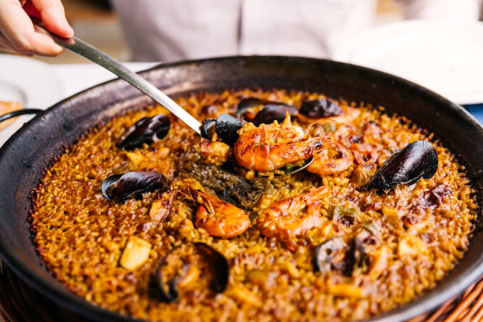
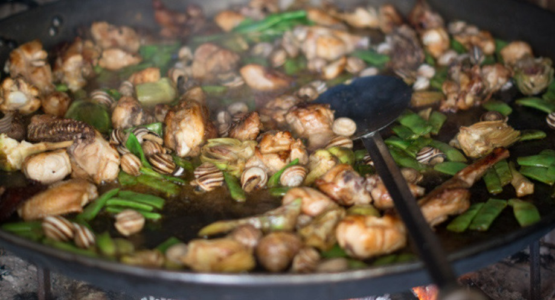
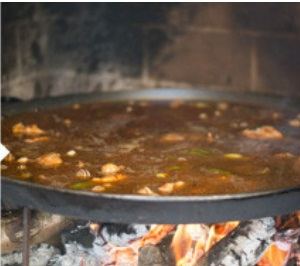
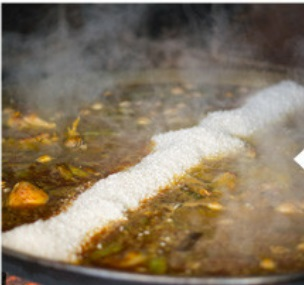
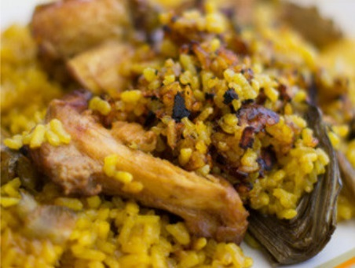

Tiempo de preparación ⏰
1 hora y 25 minutos
Raciones 🍽️
12 personas
Dificultad 🕒
Media
Lugar de origen 📍
Valencia, España
Ingredientes para 12 personas
- Arroz bomba — 1500 g
- Pollo de corral — 1
- Conejo — 0.5
- Judía verde plana — 500 g
- Garrofó — 500 g
- Alcachofa (opcional) — 6
- Caracoles — 500 g
- Aceite de oliva virgen extra
- Pimentón dulce
- Tomate triturado
- Azafrán
- Romero fresco
- Sal
El número de personas seleccionado es el mismo que el de la receta original.
Ingredientes recalculados
Preparación
Toda paella que se precie comienza por un buen sofrito. En una paella cuanto más grande mejor, se sofríe en abundante aceite el pollo, el conejo, las judías, las alcachofas y los caracoles (la que veis en la foto no tiene garrofó porque no es temporada y el congelado no es igual), sazonando con un poco de sal y pimentón hacia el final. Cuando esté bien dorado se añade el tomate triturado y se rehoga.
Con el sofrito listo se debe de añadir el agua. Las proporciones dependen mucho del fuego, del calor que haga, del grado de humedad y de lo grande que sea la paella, pero para comenzar, una buena proporción es la de añadir tres veces el volumen de agua que de arroz, aunque es la experiencia la que os hará ajustar y perfeccionar estas cantidades, que acabaréis haciendo a ojo, como hicieron la tía y la madre de mi novia, que eran las encargadas de esta paella (a pesar de que la tradición marca que sea el hombre de la casa el que la prepare).

Echamos ahora algunos troncos más al fuego para que suba de potencia y se haga bien el caldo durante 25 o 30 minutos. Es un buen momento de echar el azafrán o, en su defecto, el sazonador de paella (el más popular es "el paellador), que lleva sal, ajo, colorante y un poco de azafrán.

Luego añadimos el arroz "en caballete" (en diagonal) y lo distribuimos por la paella. Cocemos entre 17 y 20 minutos, aunque aquí el tiempo lo marca de nuevo el grano de arroz y la potencia del fuego, que debemos ir dejando consumirse. Tiene que quedar completamente seco y suelto. Mi recomendación para los primerizos es que tengáis un cazo con agua hirviendo al lado, por si hay que añadir agua. A mitad cocción también podemos poner unas ramitas de romero, que retiraremos antes de servir.

Por último, conviene dejar la paella reposar unos minutos tapada con un gran paño o papel de periódico --no es bueno porque con la humedad se puede liberar algo de tinta, pero toda la vida lo he visto usar-- antes de servirla y recibir el aplauso de los presentes.
